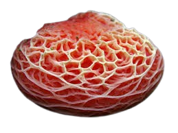
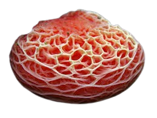

Descripción morfológica
Rhodotus palmatus, conocido como "hongo melocotón arrugado" o "hongo de la pasión", es una especie micológica única y visualmente impactante de la familia Physalacriaceae. Su sombrero (2-10 cm) presenta una superficie gelatinosa, rugosa y reticulada, con colores que varían del rosa pálido al salmón intenso, dependiendo de la luz. Las láminas son libres, espaciadas y del mismo color que el sombrero, mientras que el pie es excéntrico, fibroso y más pálido.
Características distintivas
- Cutícula gelatinosa: Superficie pegajosa con venas o hoyuelos profundos que forman un patrón alveolar único.
- Biotipo: Hongo lignícola (crece sobre madera en descomposición, especialmente olmos y arces).
- Esporas: Elípticas, hialinas, de 6-8 × 4-5 µm, con superficie lisa y color en masa rosado pálido.
- Reacción química: La carne se vuelve verde pálido con KOH (hidróxido de potasio).
Distribución y hábitat
Especie rara y localizada en el hemisferio norte (Europa, Norteamérica y Asia). Está asociada a bosques riparios y caducifolios con alta humedad, donde crece sobre troncos caídos de maderas duras en avanzada descomposición, especialmente del género Ulmus (olmos). Fructifica de verano a otoño, a menudo en pequeños grupos. Su presencia indica ecosistemas forestales maduros y bien conservados.
Requisitos ecológicos
- Sustrato: Madera en estado de pudrición blanca, preferentemente en contacto con el suelo húmedo.
- Clima: Necesita alta humedad ambiental (85-95%) y temperaturas entre 15-22°C.
- Asociaciones: A menudo coexiste con hongos lignícolas como Pleurotus ostreatus y Schizophyllum commune.
Ciclo de vida y reproducción
Este hongo es un descomponedor primario de celulosa y lignina. Su micelio se desarrolla dentro de la madera muerta durante años antes de producir cuerpos fructíferos. Las esporas se dispersan por gravedad (balistosporia) desde las láminas. Presenta ambos modos reproductivos: sexual (heterotálico) y asexual (a través de clamidosporas). Su desarrollo está estrechamente ligado a la disponibilidad de nitrógeno en el sustrato.
Etapas fenológicas
- Colonización: Micelio blanco-crema invade el leño mediante enzimas ligninolíticas.
- Formación de primordios: Pequeños nódulos rosados emergen en grietas de la corteza.
- Maduración: Los cuerpos fructíferos alcanzan su color intenso en 48-72 horas con humedad adecuada.
Importancia ecológica y usos
- 🔄 Bioindicador: Especie paraguas que señala bosques antiguos con continuidad ecológica y baja perturbación.
- 🧪 Aplicaciones biotecnológicas: Produce enzimas lignocelulolíticas usadas en biorremediación y producción de biocombustibles.
- 📸 Valor estético: Icono de la fotografía micológica por su belleza singular; protagonista en concursos internacionales.
- 🧫 Estudios genéticos: Modelo para investigar pigmentación en hongos (rodotoralina, un carotenoide).
Curiosidades y datos fascinantes
- Estado de conservación: Incluido en listas rojas de 18 países europeos; en España está "En Peligro Crítico".
- Historia taxonómica: Originalmente descrito como Agaricus palmatus por Bulliard en 1785, reclasificado en 1926.
- Luminiscencia: Algunas poblaciones muestran bioluminiscencia verde en estadios juveniles (raro en Agaricales).
- Cultura popular: Aparece en la novela "El hongo" de John Christopher como organismo alienígena.
Amenazas y medidas de protección
Catalogado como especie amenazada debido a:
- Pérdida de hábitat: Tala de bosques maduros y eliminación de madera muerta.
- Enfermedad del olmo: La grafiosis reduce su sustrato principal.
- Cambio climático: Alteración de los regímenes de humedad que necesita.
Acciones de conservación
- Protección de bosques ribereños con olmos viejos.
- Programas de reintroducción mediante inoculación de micelio en troncos adecuados.
- Monitoreo ciudadano a través de plataformas como iNaturalist.